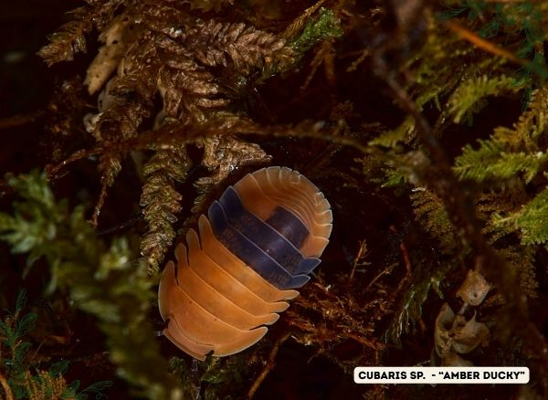
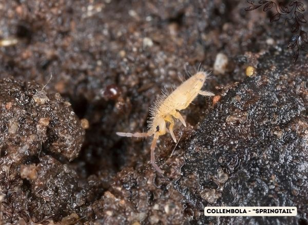

Why Are My Isopods Dying?
Explore possible causes of unexpected deaths, including environmental stress, moisture imbalance, temperature, and enclosure conditions.
Explore the GuideROOT & ROT / ISOPODS & SPRINGTAILS
Beneath fallen leaves and hidden within the soil lives an incredible community of tiny creatures. Discover isopods, springtails, and the fascinating roles they play in living ecosystems.
Explore Isopods & SpringtailsTHE WORLD BENEATH OUR FEET
They may be small, but these fascinating creatures play an important role in breaking down organic matter and supporting healthy soil ecosystems.

Often called woodlice, pill bugs, or roly-polies, terrestrial isopods are small crustaceans that help break down decaying leaves, wood, and other organic materials.
With their fascinating behaviors, unique colors, and wide variety of species, many are also kept in dedicated breeding colonies.

Springtails are tiny, wingless hexapods commonly found in moist soil, leaf litter, and decaying organic matter.
Many species feed on fungi and decomposing material, making them valuable additions to suitable bioactive environments.
LIFE BENEATH THE LEAVES
Take a closer look beneath the fallen leaves or inside a handful of healthy soil, and you'll discover a tiny world that's constantly at work. Isopods and springtails may not get much attention, but they play important roles in keeping natural ecosystems functioning.
Isopods are little recyclers. They munch on decaying leaves, rotting wood, and other organic material, helping break it into smaller pieces. Springtails work on an even smaller scale, with many species feeding on fungi and microorganisms growing throughout the soil and leaf litter.
In a bioactive enclosure, these two creatures complement one another beautifully. Isopods help process larger bits of organic waste, while springtails help manage fungal growth and contribute to decomposition. Together with beneficial microbes, they help recycle nutrients and support a more natural, living habitat.
A thriving ecosystem isn't just about what grows above the soil. It's also about the little lives working beneath it.
COLONY HEALTH & TROUBLESHOOTING
Even carefully maintained colonies can encounter challenges. Learn how to recognize common problems, understand possible causes, and make thoughtful adjustments to your enclosure.
Explore possible causes of unexpected deaths, including environmental stress, moisture imbalance, temperature, and enclosure conditions.
Explore the GuideDiscover why mold appears, when fungal growth is a normal part of decomposition, and how springtails and enclosure maintenance can help.
Explore the GuideLearn to recognize excessive moisture, drying substrate, and poor ventilation, and how to maintain an appropriate moisture gradient for your species.
Explore the GuideIdentify common organisms that appear in isopod enclosures, distinguish harmless decomposers from potential problems, and learn when action may be needed.
Explore the GuideKEEP EXPLORING
Every leaf, every piece of bark, and every tiny inhabitant has a role to play. Continue exploring the fascinating relationships that make bioactive ecosystems possible.
Explore Bioactive Living